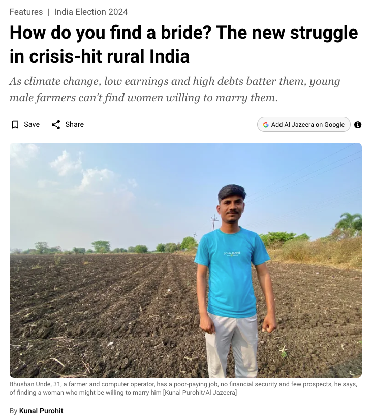
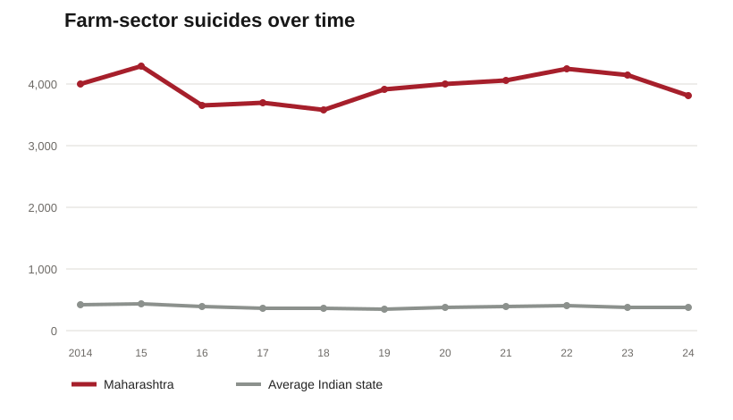

Agriculture and Patriarchy: Growing and Severing the Roots of Male Dominance
Agriculture and Patriarchy examines how intensive natural resource extraction-enabled commercial agriculture consolidates male power, and how climate change may erode it. The first part of the book focuses on canal-irrigated sugarcane production in India, tracing how agricultural development consolidated men's dominance within households and communities. This was achieved all the while deepening unbridled and unsustainable water use.
The second part of the book examines how climate change destabilizes the agricultural roots of male dominance in rural India. It does so by highlighting an understudied mechanism: the politics of marriage markets. The book argues and shows that climate change, when thought of as the structural decline of the male-dominated agricultural sector, existentially threatens farming men's position on marriage markets. Existential threats to men's marriage prospects weaken men’s confidence and public participation while increasing women’s bargaining power within families. The findings of the book revise conventional accounts of women as climate victims and show how poorly designed climate adaptation policies may re-entrench gender inequality.

